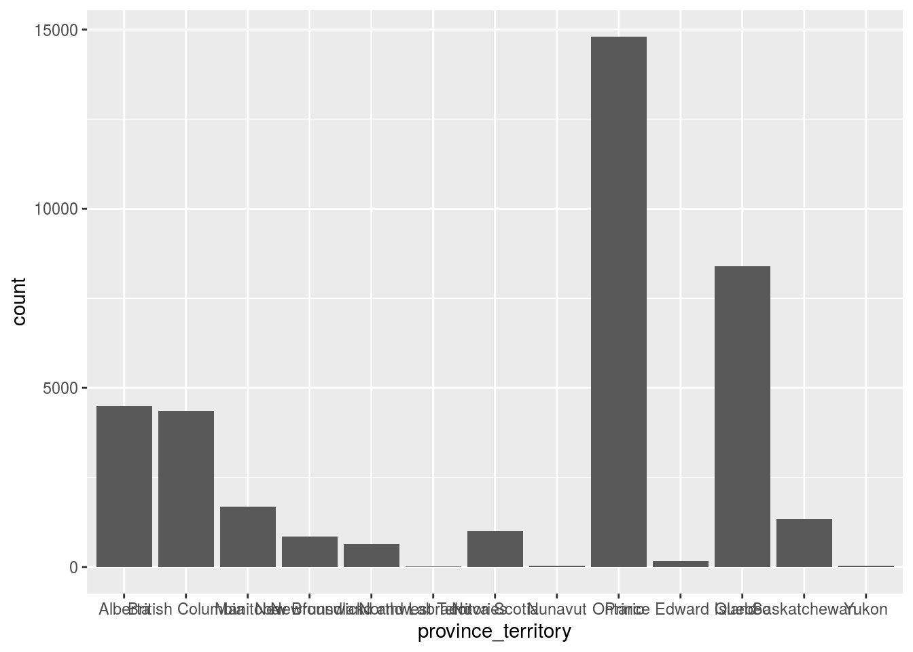

Abstract
Here we investigate how education and province_territory affect the election and find that Ontario province is highly associated with the election; in addition, people with Bachelor’s degree are highly associated with the election.
Introduction
The major task of this paper is to see how education and province_territory affect the election via looking the distributions of the two variables.
Since both of them are categorical variables, we look at the distributions of them via bar charts. in addition, the weakness and further works are followed in the discussion part.
Data
The data used come from the 2019 Canadian Election Study online survey and it contains 37882 observations and 22 variables. For the need of our study, we only care about the variables education and province_territory, which are both categorical variables.
We first see the distribution of province_territory and find that Ontario province is highly associated with the election and takes the largest proportion of all the regions.
decon <-
decon%>%
select(education,province_territory)
decon%>%
ggplot(aes(x=province_territory))+
geom_bar()
table(decon$province_territory)
##
## Alberta British Columbia Manitoba
## 4481 4354 1691
## New Brunswick Newfoundland and Labrador Northwest Territories
## 858 633 25
## Nova Scotia Nunavut Ontario
## 1001 26 14808
## Prince Edward Island Quebec Saskatchewan
## 168 8399 1340
## Yukon
## 38We then give the distribution of education and find that people with Bachelor’s degreee are highly associated with the election since they take the largest proportion of all the people.
decon%>%
ggplot(aes(x=education))+
geom_bar()
table(decon$education)
##
## No schooling
## 48
## Some elementary school
## 87
## Completed elementary school
## 288
## Some secondary/ high school
## 1649
## Completed secondary/ high school
## 5865
## Some technical, community college, CEGEP, College Classique
## 4394
## Completed technical, community college, CEGEP, College Classique
## 7702
## Some university
## 3716
## Bachelor's degree
## 9192
## Master's degree
## 3207
## Professional degree or doctorate
## 1575
## Don't know/ Prefer not to answer
## 99Discussion
weakness and next steps
A major weakness of the data is that it comes from the online survey and the non-response bias may exist. For further studies, they may find ways to reduce the effects of non-response bias.
Reference
Paul A. Hodgetts and Rohan Alexander (2020). cesR: Access the CES Datasets a Little Easier.. R package version 0.1.0.
Wickham et al., (2019). Welcome to the tidyverse. Journal of Open Source Software, 4(43), 1686, https://doi.org/10.21105/joss.01686